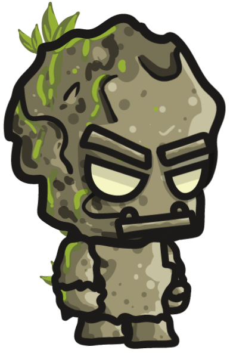
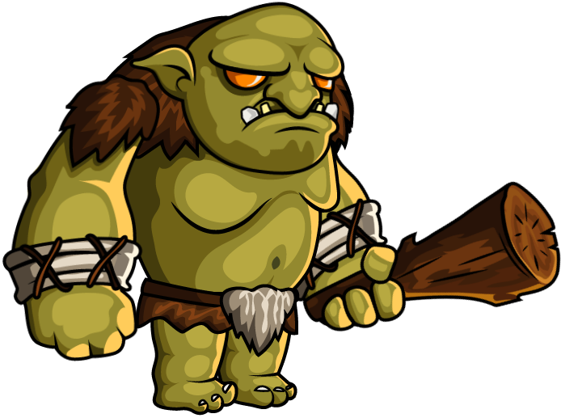

Wild West
História
Em uma terra árida e vasta do Velho Oeste, onde o sol queima as costas e os cactos erguem-se como sentinelas solitárias, uma aventura peculiar se desenrola. Conheça Spike, um cacto corajoso e destemido, cujo destino se entrelaça com o jogo lendário chamado "Wild West". Spike era diferente dos outros cactos. Enquanto seus amigos permaneciam imóveis, Spike tinha um desejo ardente de explorar e descobrir o mundo além do deserto. Um dia, ele tropeçou em uma antiga moeda reluzente, perdida nas areias quentes. Nesse momento, uma voz ecoou pelo deserto, convocando-o para uma jornada épica.
Guiado pela voz, Spike embarcou em uma aventura para coletar moedas espalhadas por todo o deserto. Cada moeda que ele encontrava o fortalecia, dando-lhe novas habilidades e poderes para enfrentar os desafios que encontrava. Ao longo do caminho, ele enfrentou bandoleiros de areia, atravessou ravinas traiçoeiras e enfrentou tempestades de areia furiosas. No entanto, seu maior desafio estava reservado para o final. No coração do deserto, Spike confrontou seu inimigo final, um imponente ogro conhecido como Grumble. O ogro guardava o tesouro final, a chave para desbloquear os segredos do deserto.
Com coragem e determinação, Spike enfrentou Grumble em uma batalha épica. Utilizando suas habilidades recém-adquiridas e sua astúcia, Spike conseguiu superar os formidáveis ataques do ogro. Cada moeda que ele havia coletado ao longo de sua jornada provou ser inestimável, fornecendo-lhe a força necessária para triunfar.
No final, Spike emergiu vitorioso, não apenas como um cacto destemido, mas como um herói do deserto. Com o tesouro em mãos, ele trouxe prosperidade para sua terra natal e inspirou outros cactos a seguirem seus sonhos além das areias do deserto. E assim, a lenda de Spike, o cacto aventureiro, ecoou através do Wild West, lembrando a todos que até mesmo as criaturas mais inesperadas podem realizar feitos extraordinários quando têm coragem e determinação.
Sprites
Spike
Protagonista

Boomerang
Arma

Golem
Inimigo
Grumble
Boss
